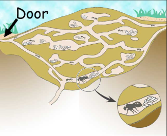
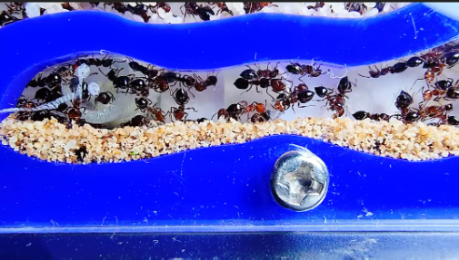
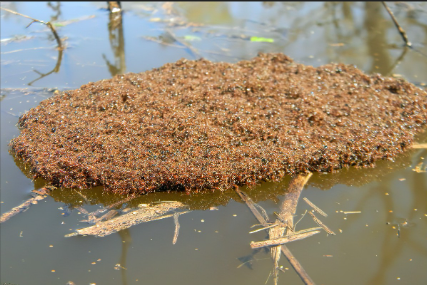

Architecture of Ant Colonies
Ants are master architects, building complex underground cities that feature tunnels, chambers, and ventilation systems. These structures vary depending on the species and environment, demonstrating incredible adaptability and efficiency.

Key Architectural Features:

Vertical and horizontal tunnels – These act as the main transportation routes inside the colony. Vertical shafts connect deep chambers to the surface, while horizontal passages allow quick travel between different sections, reducing congestion and optimizing efficiency.

Dedicated chambers for food storage and nursery – Separate chambers keep food reserves safe from contamination and predators. Nursery areas are temperature-controlled by the ants to ensure optimal growth of larvae, showing an impressive level of biological engineering.
Natural ventilation mechanisms – Some ant mounds are designed with chimney-like structures and angled tunnels that regulate airflow, controlling humidity and temperature without any mechanical systems.

Protective structures against predators and floods
– Colonies have strategic entrances and barricades to prevent predator access. In flood-prone regions, species like fire ants form floating rafts with their bodies, keeping the queen and brood safe until they reach dry land.